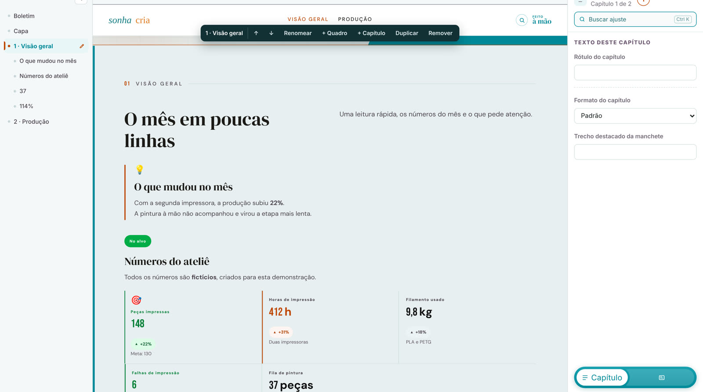
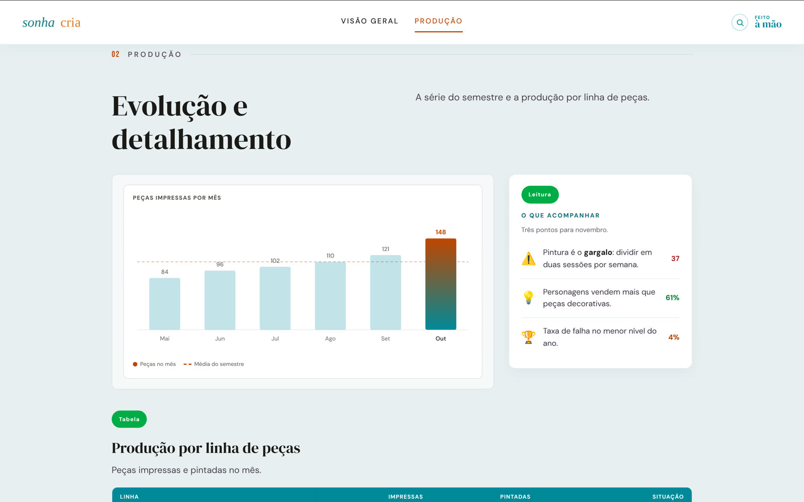

Boletim Studio
Editor de boletins executivos para analistas que não precisam saber HTML.
- O problema
- Montar um boletim executivo dependia de quem sabia HTML e CSS, e cada edição podia quebrar o layout.
- Onde roda
- Executável para Windows, que roda offline. Em uso por analistas de uma área corporativa.
- Onde a IA entra
- A IA entrou no desenvolvimento, como par de programação. O produto roda sem IA e sem internet, de propósito: lida com dados internos.
Como funciona
Toque num passo para ver onde ele acontece no diagrama.


Decisões que eu defendo
- Offline e sem importar HTML de fora. Nenhum script estranho chega ao boletim.
- Antes de qualquer saída, um portão de validação confere o documento contra o contrato. O que não passa volta com o motivo.
- Um único renderizador gera a prévia e a exportação, então o que se vê na tela é o que sai no arquivo.
- Na versão nova, cada quadro é uma pasta autocontida. Quadro novo não toca em nenhum arquivo fora da própria pasta: o custo cresce em N + M, não em N × M.
Limites
Os boletins reais e os dados ficam na empresa. Aqui aparece só a arquitetura.
Tecnologias
- Python
- Flask
- SQLite
- HTML, CSS e JS próprios
- PyInstaller
- pytest